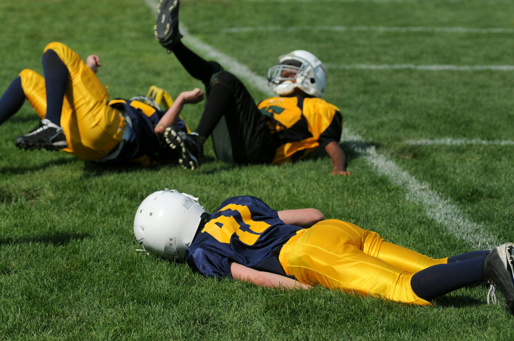
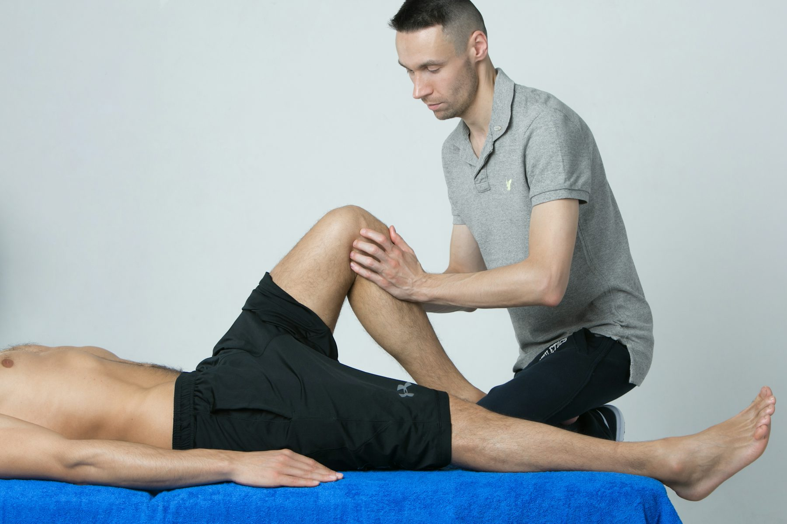
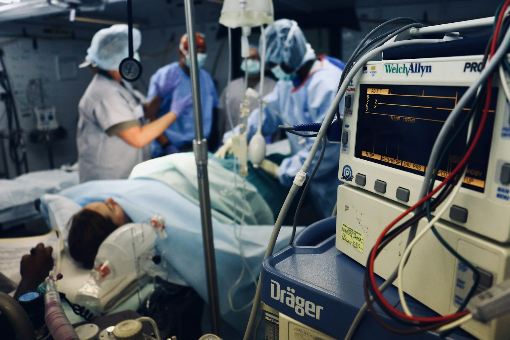
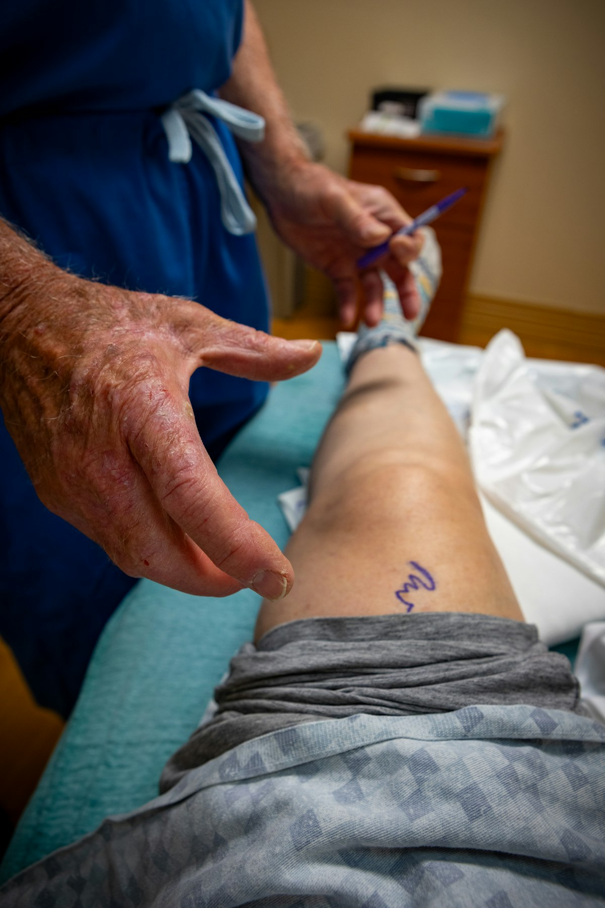
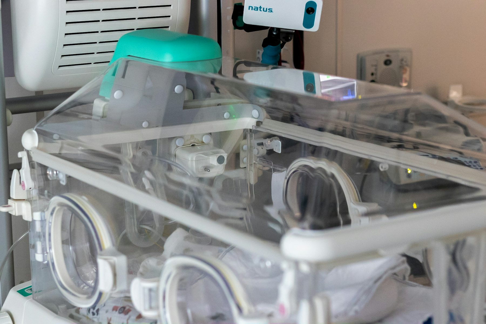

Orthopedic, Trauma & Critical Care
Experience
12+ Years
Dedicated orthopedic and trauma practice backed by surgical and academic expertise.
Case Volume
7000+
Procedures and operative cases spanning trauma, arthroscopy and joint replacement work.
Care Model
One Team
Ortho, neuro, critical care and physio planning aligned around every patient journey.
BSG Hospital Centre for Advance Orthopedic & Critical Care with a focused practice in sports injury, arthroplasty and complete orthopedic trauma solutions.
BSG Hospital brings orthopedic surgery, trauma response, neuro and critical care support, and physiotherapy-driven rehabilitation into one coordinated recovery system. The result is faster decisions, cleaner handoffs, and stronger outcomes for patients who need decisive care.
Sports Injury Management
Joint Replacement
Fracture & Trauma Care
Critical Care Backup

Two Hospital Locations
BSG Hospital is listed in Varanasi and Bhadohi Nagar Palika, with both locations marked open 24 hours.
Core Focus
Focused specialties built for injury, pain relief and functional recovery
The hospital serves active adults, sports injury cases, trauma patients, degenerative joint disease patients and families who need clear treatment planning with dependable follow-through.

Sports Injury & Arthroscopy
Assessment, repair and recovery planning for ligament injuries, meniscal tears, shoulder instability, sports trauma and return-to-activity pathways.

Rehabilitation-Led Recovery
Physio support is built into the plan so pain control, mobility, confidence and function keep moving after surgery or fracture care.

Trauma & Emergency Response
Fracture stabilization, accident care, operative fixation and faster escalation when a case needs immediate orthopedic intervention.

Arthroplasty Expertise
Total knee replacement, total hip replacement and hemiarthroplasty planned around pain reduction, joint function and early mobilization.
Clear Surgical Decision-Making
Each case is evaluated for the right balance of conservative care, minimally invasive intervention and definitive surgery.

Critical Care Coordination
Serious trauma and high-risk postoperative care benefit from hospital-based ICU and multi-specialty support when patients need it most.


Why BSG Hospital
A complete orthopedic trauma solution, not a fragmented referral chain
BSG Hospital is built around a practical philosophy: orthopedic care works best when diagnosis, surgery, monitoring and rehabilitation are treated as one connected system. That means fewer delays, better communication and more confidence for patients and families.
Orthopedic
Neuro Support
Critical Care
Physio Team
- Structured care for fractures, ligament injuries, joint pain and postoperative recovery.
- Experience across arthroscopy, hip and knee arthroplasty, trauma fixation and emergency procedures.
- Focused support for patients who need both surgical accuracy and careful recovery supervision.
Care Model
How the BSG treatment pathway is designed
Every case is handled with a stepwise system so patients know what happens next and the team stays aligned through surgery and recovery.
Diagnosis with clarity
Clinical exam, history, imaging review and honest discussion of whether the case needs therapy, procedure or surgery.
Stabilize and plan
Trauma cases are stabilized quickly while arthroplasty and arthroscopy patients receive a surgical roadmap before intervention.
Operate with support
Orthopedic expertise is backed by hospital infrastructure and critical care support for higher acuity situations.
Rehabilitate for function
Physiotherapy, review visits and recovery targets are integrated from the beginning so patients return stronger and sooner.
Need urgent orthopedic review, joint pain guidance or a second opinion?
BSG Hospital is designed for patients who want decisive care, clear advice and a plan that moves from diagnosis to recovery without confusion.